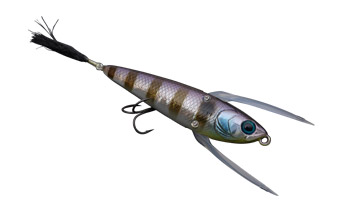
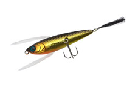
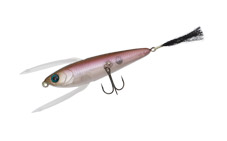
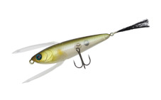
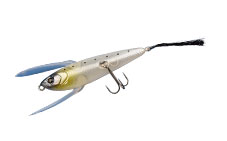
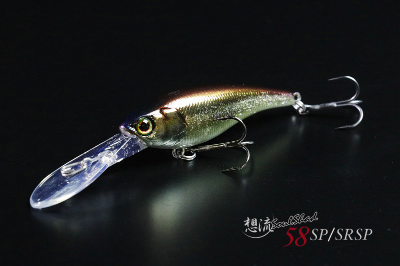
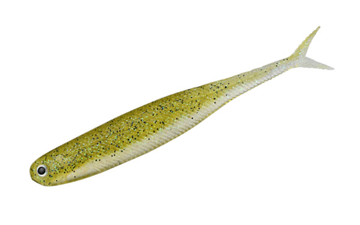

レゼルブ
（RESERVE）
レゼルブ（RESERVE）はDSTYLE（ディスタイル）のトップウォーターです。
止めてよし・揺らしてよし、巻いてよし。主なターゲットはブラックバスです。
ゆっくりしたシェイクアクションで誘える、ベイトフィッシュのような小型トップウォータープラグ。JACKALL社との共同開発ルアー第1弾です。

画像出典:DSTYLE公式HP
スペック
- メーカー
- DSTYLE（ディスタイル）
- タイプ
- フローティング（トップウォーター）
- 全長
- 70mm
- 重量
- 5g
- フック
- ハヤブサ 瞬貫トレブル #8
- 共同開発
- JACKALL
- 価格
- 2,145円（税込）
▼今すぐチェック
レゼルブの特徴
羽ではなく「数匹のベイトが絡み合っている」イメージ
-
水面でもがくスローアクション
弱ったベイトフィッシュが水面でもがいているスローアクションを出すための羽。羽というより、数匹のベイトが絡み合っているイメージ。
-
シェイクでもただ巻きでも
シェイクによるもがきアクションだけでなく、ただ巻きでのバタバタアクションもできる。
-
食わせのトップウォーター
止める・揺らす・巻くと、あらゆる誘いができる食わせのトップウォータープラグ。
レゼルブの使い方
基本は、着水させたらその場でゆっくりシェイクして、弱ったベイトが水面でもがく動きを出します。
広く探りたい時は、ただ巻きでバタバタと泳がせましょう。止める・揺らす・巻くを組み合わせて、反応のいい誘い方を探します。
レゼルブの得意な状況
水面を意識しているバスや、弱ったベイトを食べているバスを狙う時が得意です。
小型で着水音も静かなので、プレッシャーの高いフィールドで、トップで食わせたい時にも向いています。
ワンポイント
5gの小型トップなので、スピニングタックルやベイトフィネスのタックルで扱いやすいサイズです。
オススメカラー
レゼルブはカラーが豊富です。そのうち4色を紹介します（画像は公式のカラーチャートより）。

キンクロまず1つ選ぶならこの色。定番のアピールカラー。

ワカサギワカサギのいる湖に。

アユアユのいる川やリザーバーに。

シラウオ透け感のあるナチュラル系。
画像出典:DSTYLE公式HP
レゼルブに似ているルアー
-

ソウルシャッド ジャッカル 詳細はこちら＞共同開発したジャッカルの定番シャッド。
-

ヴィローラ4インチ DSTYLE 詳細はこちら＞同じDSTYLEのリアル系ワーム。I字系やピクピクにも。
-
 ベータミノー
TTT
詳細はこちら＞
ベータミノー
TTT
詳細はこちら＞
バス用のジョイントベイト。